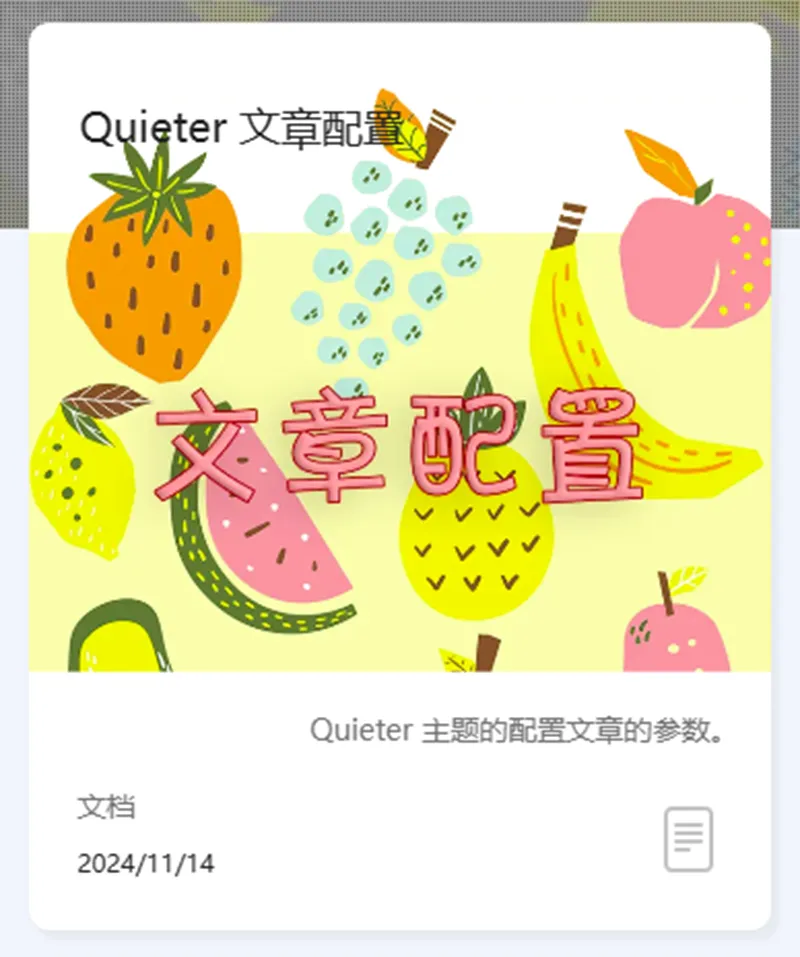

前言
通过设定 Quieter 文章头部的相关参数，实现文章的个性化。
正文
基本参数
| 参数 | 描述 |
|---|---|
| title | 标题 |
| date | 日期（格式：年-月-日 时-分-秒） |
| tags | 标签 |
| categories | 分类 |
| cover | 封面 |
| description | 简介信息 |
示例：
|
高级参数
封面外挂 CSS
Quieter 支持自定义封面图片的 CSS，通过 cover_style 参数实现，对于本文封面的超框效果，设定的头部文件如下：
|
效果如下：

当然，这个效果也需要封面图片配合才能做到。
顶部封面
可以通过 top_img 属性设置文字顶部的封面，值可以为多个，每次打开页面时将从中随机选取一张：
|
侧边栏
可以通过设置 asdie 属性，设定文档侧边栏的显示/隐藏（默认为显示）。
|
目录
可以通过设置 toc 属性，设定文档目录的显示和隐藏（默认为隐藏）。
|
目录的显示方式有两种方式：
- 一种是在侧边栏显示所有的目录信息
- 另一种是将目录栏折叠，当页面滚动到相应位置时才展开（默认）
若要设定前者的目录形式，可以设置：
|
toc_depth 属性可以设置目录记录的标题深度（h1-h6），下面这段代码表示当前目录只记录 （h1-h3）的标题。
|
系列标签
通过设定 series 属性，将在侧边栏显示同样标签的其它文章。示例如下：
|
请注意：series 中出现的标签必须在 tags 中存在！
写作相关
这部分的参数在 Quieter 文章写作 | Hexo-Theme-Quieter 中已经介绍，下面作一个汇总表：
| 参数 | 类型 | 描述 | 默认值 |
|---|---|---|---|
| fancybox | bool | 是否打开 fancybox。 | true |
| photoFigcaption | bool | 是否在图片下方显示图片描述（描述文本为图片的 alt 内容）。 |
false |
| math | bool | 是否渲染数学公式。 | false |
| mermaid | bool | 是否开启 Mermaid（适配 hexo-filter-mermaid-diagrams 插件）。 | false |
| APlayer | bool | 是否开启 APlayer（适配 hexo-tag-aplayer 插件）。 | false |
| AES | bool | 是否对文章片段进行 AES 加密。 | false |
| gallery | bool | 是否使用瀑布流相册。 | false |
| highlight_shrink | bool | 是否收缩代码块（参考自 Butterfly） | false |
| highlight_height_limit | string | 控制代码块最大显示长度，超出部分以滚动条的形式显示（示例：480px）。 |
auto |
为了保证网页的性能，请不要打开文章中未用到的功能！
文章加密
Quieter 对 hexo-blog-encrypt 加密插件做了适配优化，当文章被加密后，文章主界面将显示上锁标记。同时，解决了文章解密后 js 失效的问题。
|
评论系统
如果评论功能已经配置好，默认文章是打开评论系统的，如果不想要在某个文章中开启评论，可以设置：
|
子页面
如果在文章同名的文件夹下放置一个 .md 文件，则 Quieter 可视其为子页面并在面包糠导航栏上体现。
子页面建议在使用 hexo-hide-posts 插件设置隐藏，使其在主页不显示：
|
下面是一个子页面的示例：
子页面
Hexo 有时候不会正确地渲染子页面，多试几次吧。
代码注入
参考自 Butterfly。如果需要在文章头部/底部注入（js/css）的话，可以通过设置 inject 属性来实现：
|
下面是一个引入 chat.css 的示例：
|